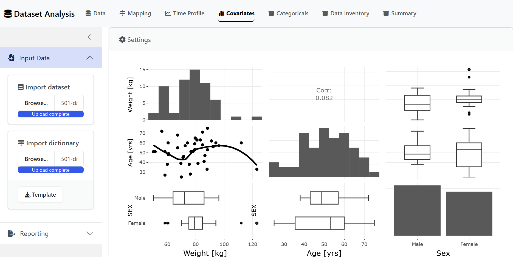
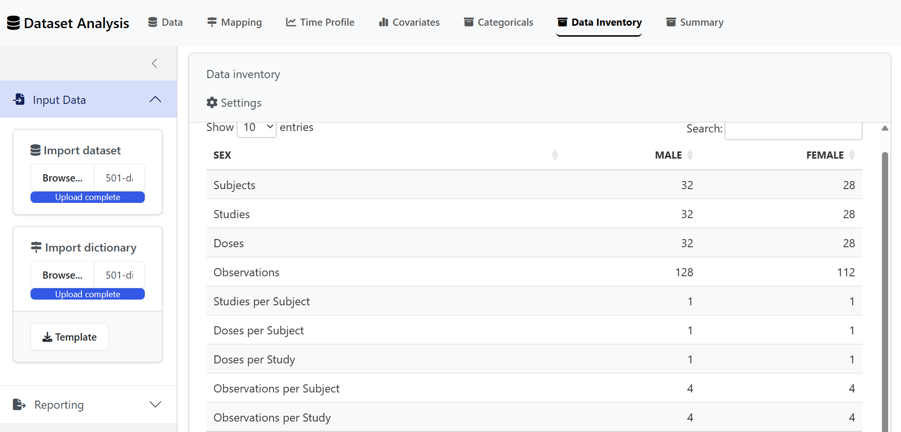

Shiny Apps
shiny.RmdThe {nonmem.utils} package includes a series of Shiny
Apps to interactively perform your Nonmem related analyses.
Shiny Toolbox
Use the code below or the Addins drop-down menu to check all available analyses:
nonmem.utils::shiny_toolbox()📷 View snapshot

Dataset Analysis
nonmem.utils::run_shiny("dataset-analysis")📷 View snapshots
| 🚀 Data | 📈 Time Profile |
|---|---|

|

|
| 💼 Covariates | 💼 Data Inventory |
|  |  |